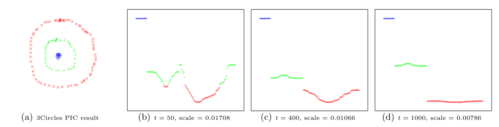

Sparklyr 1.6 release introduces new functionalities such as weighted quantile summaries, R interface for power iteration clustering, and spark_write_rds(), as well as a number of dplyr-related improvements.
Sparklyr 1.6 is now available on CRAN!
To install sparklyr 1.6 from CRAN, run
install.packages("sparklyr")
In this blog post, we shall highlight the following features and enhancements from sparklyr 1.6:
spark_write_rds() + collect_from_rds()Apache Spark is well-known for supporting approximate algorithms that trade off marginal amount of accuracy for greater speed and parallelism. Such algorithms are particularly beneficial for performing preliminary data explorations at scale, as they enable users to quickly query certain estimated statistics within a predefined error margin while avoiding the high cost of exact computations. One such algorithm is the Greenwald-Khanna online computation of quantile summaries, as described in Greenwald and Khanna (2001). While this algorithm was originally designed for efficient \(\epsilon\)- approximation of quantiles within a large dataset without the notion of data points carrying different weights, and the unweighted version of it has been implemented as approxQuantile() since Spark 2.0, the same algorithm can be generalized to handle weighted inputs, and as sparklyr user @Zhuk66 mentioned in this issue, a weighted version of this algorithm can be a useful sparklyr feature.
To properly explain what weighted-quantile means, we must clarify what the weight of each data point signifies. For example, if we have a sequence of observations \((1, 1, 1, 1, 0, 2, -1, -1)\) and would like to find the median of all data points, then we can either run the unweighted version of approxQuantile() in Spark to scan through all 8 data points, or alternatively, “compress” the data into 4 tuples of (value, weight): \(((1, 0.5), (0, 0.125), (2, 0.125), (-1, 0.25))\), where the second value of each tuple represents how often a value occurs relative to the rest of the observed values, and then find the median by scanning through the 4 tuples using a weighted version of the Greenwald-Khanna algorithm.
We can also run through a contrived example involving the standard normal distribution to illustrate the power of weighted quantile estimation in sparklyr 1.6. Suppose we cannot simply run qnorm() in R to evaluate the quantile function of the standard normal distribution at \(p = 0.25\) and \(p = 0.75\), how can we get some vague idea about the 1st and 3rd quantile of this distribution? One way is to sample a large number of data points from this distribution, and then apply the Greenwald-Khanna algorithm to our unweighted samples, as shown below:
library(sparklyr)
sc <- spark_connect(master = "local")
num_samples <- 1e6
samples <- data.frame(x = rnorm(num_samples))
samples_sdf <- copy_to(sc, samples, name = random_string())
samples_sdf %>%
sdf_quantile(
column = "x",
probabilities = c(0.25, 0.75),
relative.error = 0.01
) %>%
print()
## 25% 75%
## -0.6629242 0.6874939Notice because we are working with an approximate algorithm and have specified relative.error = 0.01, the estimated value of \(-0.6629242\) from above could be anywhere between the 24th and the 26th percentile of all samples. In fact, it falls in the \(25.36896\)-th percentile:
pnorm(-0.6629242)
## [1] 0.2536896Now how can we make use of weighted quantile estimation from sparklyr 1.6 to obtain similar results? Simple! We can sample a large number of \(x\) values uniformly randomly from \((-\infty, \infty)\) (or alternatively, just select a large number of values uniformly spaced between \((-M, M)\) where \(M\) is approximately \(\infty\)), and assign each \(x\) value a weight of \(\displaystyle \frac{1}{\sqrt{2 \pi}}e^{-\frac{x^2}{2}}\), the standard normal distribution’s probability density at \(x\), and then make sdf_quantile() take both the value column "x" and the weight column into account, as shown below:
library(sparklyr)
sc <- spark_connect(master = "local")
num_samples <- 1e6
M <- 1000
samples <- tibble::tibble(
x = M * seq(-num_samples / 2 + 1, num_samples / 2) / num_samples,
weight = dnorm(x)
)
samples_sdf <- copy_to(sc, samples, name = random_string())
samples_sdf %>%
sdf_quantile(
column = "x",
weight.column = "weight",
probabilities = c(0.25, 0.75),
relative.error = 0.01
) %>%
print()
## 25% 75%
## -0.696 0.662Voilà! The estimates are not too far off from the 25th and 75th percentiles in relation to our abovementioned maximum permissible error of \(0.01\):
pnorm(-0.696)
## [1] 0.2432144pnorm(0.662)
## [1] 0.7460144Power iteration clustering (PIC), a simple and scalable graph clustering method presented in Lin and Cohen (2010), first finds low-dimensional embedding of a dataset using truncated power iteration on normalized pairwise-similarity matrix of all data points, and then uses such embedding as the “cluster indicator,” an intermediate representation of the dataset that leads to fast convergence when used as input to k-means clustering. This process has been very well illustrated by figure 1 of Lin and Cohen (2010) (reproduced below)

in which the leftmost image is the visualization a dataset consisting of 3 circles, with points colored in red, green, and blue indicating clustering results, and the subsequent images show the power iteration process gradually transforming the original set of points into what appears to be 3 disjoint line segments, an intermediate representation that can be rapidly separated into 3 clusters using k-means clustering with \(k = 3\).
In sparklyr 1.6, ml_power_iteration() was implemented to make the PIC functionality in Spark accessible from R. It expects a 3-column Spark dataframe that represents a pairwise-similarity matrix of all data points as input. Two of the columns in this dataframe should contain 0-based row and column indices, and the third column should contain the similarity measure between a pair of data points. In the example below, we will see a dataset consisting of 2 circles being easily separated into 2 clusters by ml_power_iteration(), with the Gaussian kernel being used as the similarity measure between any 2 points:
gen_similarity_matrix <- function() {
# Guassian similarity measure
guassian_similarity <- function(pt1, pt2) {
exp(-sum((pt2 - pt1) ^ 2) / 2)
}
# generate evenly distributed points on a circle centered at the origin
gen_circle <- function(radius, num_pts) {
seq(0, num_pts - 1) %>%
purrr::map_dfr(
function(idx) {
theta <- 2 * pi * idx / num_pts
radius * c(x = cos(theta), y = sin(theta))
})
}
# generate points on both circles
pts <- rbind(
gen_circle(radius = 1, num_pts = 80),
gen_circle(radius = 4, num_pts = 80)
)
# populate the pairwise similarity matrix (stored as a 3-column dataframe)
similarity_matrix <- data.frame()
for (i in seq(2, nrow(pts)))
similarity_matrix <- similarity_matrix %>%
rbind(seq(i - 1L) %>%
purrr::map_dfr(~ list(
src = i - 1L, dst = .x - 1L,
similarity = guassian_similarity(pts[i,], pts[.x,])
))
)
similarity_matrix
}
library(sparklyr)
sc <- spark_connect(master = "local")
sdf <- copy_to(sc, gen_similarity_matrix())
clusters <- ml_power_iteration(
sdf, k = 2, max_iter = 10, init_mode = "degree",
src_col = "src", dst_col = "dst", weight_col = "similarity"
)
clusters %>% print(n = 160)
## # A tibble: 160 x 2
## id cluster
## <dbl> <int>
## 1 0 1
## 2 1 1
## 3 2 1
## 4 3 1
## 5 4 1
## ...
## 157 156 0
## 158 157 0
## 159 158 0
## 160 159 0The output shows points from the 2 circles being assigned to separate clusters, as expected, after only a small number of PIC iterations.
spark_write_rds() + collect_from_rds()spark_write_rds() and collect_from_rds() are implemented as a less memory- intensive alternative to collect(). Unlike collect(), which retrieves all elements of a Spark dataframe through the Spark driver node, hence potentially causing slowness or out-of-memory failures when collecting large amount of data, spark_write_rds(), when used in conjunction with collect_from_rds(), can retrieve all partitions of a Spark dataframe directly from Spark workers, rather than through the Spark driver node. First spark_write_rds() will distribute the tasks of serializing Spark dataframe partitions in RDS version 2 format among Spark workers. Spark workers can then process multiple partitions in parallel, each handling one partition at a time and persisting the RDS output directly to disk, rather than sending dataframe partitions to the Spark driver node. Finally, the RDS outputs can be re-assembled to R dataframes using collect_from_rds().
Shown below is an example of spark_write_rds() + collect_from_rds() usage, where RDS outputs are first saved to HDFS, and then downloaded to local filesystem with hadoop fs -get, before being post-processed with collect_from_rds():
library(sparklyr)
library(nycflights13)
num_partitions <- 10L
sc <- spark_connect(master = "yarn", spark_home = "/usr/lib/spark")
flights_sdf <- copy_to(sc, flights, repartition = num_partitions)
# Spark workers serialize all partition in RDS format in parallel and write RDS
# outputs to HDFS
spark_write_rds(
flights_sdf,
dest_uri = "hdfs://<namenode>:8020/flights-part-{partitionId}.rds"
)
# Run `hadoop fs -get` to download RDS files from HDFS to local file system
for (partition in seq(num_partitions) - 1)
system2(
"hadoop",
c("fs", "-get", sprintf("hdfs://<namenode>:8020/flights-part-%d.rds", partition))
)
# Post-process RDS outputs
partitions <- seq(num_partitions) - 1 %>%
lapply(function(partition) collect_from_rds(sprintf("flights-part-%d.rds", partition)))
# Optionally, call `rbind()` to combine data from all partitions into a single R dataframe
flights_df <- do.call(rbind, partitions)
Similar to other recent sparklyr releases, sparklyr 1.6 release comes with a number of dplyr-related improvements, such as support for where() predicate within select() and summarize(across(...)) operations on Spark dataframes, addition of if_all() and if_any() functions, and full compatibility with dbplyr 2.0 backend API.
select(where(...)) and summarize(across(where(...)))The dplyr where(...) construct is useful for applying selection or aggregation function to multiple columns that satisfy some boolean predicate. For example,
returns all numeric columns from the iris dataset, and
computes the average of each numeric column.
In sparklyr 1.6, both types of operations can be applied to Spark dataframes, e.g.,
library(dplyr)
library(sparklyr)
sc <- spark_connect(master = "local")
iris_sdf <- copy_to(sc, iris, name = random_string())
iris_sdf %>% select(where(is.numeric))
iris %>% summarize(across(where(is.numeric), mean))
if_all() and if_any()if_all() and if_any() are 2 convenience functions from dplyr 1.0.4 (see here for more details) that effectively1 combine the results of applying a boolean predicate to a tidy selection of columns using the logical and/or operators.
Starting from sparklyr 1.6, if_all() and if_any() can also be applied to Spark dataframes, .e.g.,
library(dplyr)
library(sparklyr)
sc <- spark_connect(master = "local")
iris_sdf <- copy_to(sc, iris, name = random_string())
# Select all records with Petal.Width > 2 and Petal.Length > 2
iris_sdf %>% filter(if_all(starts_with("Petal"), ~ .x > 2))
# Select all records with Petal.Width > 5 or Petal.Length > 5
iris_sdf %>% filter(if_any(starts_with("Petal"), ~ .x > 5))
dbplyr 2.0 backend APISparklyr 1.6 is fully compatible with the newer dbplyr 2.0 backend API (by implementing all interface changes recommended in here) while still maintaining backward compatibility with the previous edition of dbplyr API, so that sparklyr users will not be forced to switch to any particular version of dbplyr.
This should be a mostly non-user-visible change as of now, as in, the only discernible behavior change will be the following code
library(dbplyr)
library(sparklyr)
sc <- spark_connect(master = "local")
print(dbplyr_edition(sc))
outputting
[1] 2if sparklyr is working with dbplyr 2.0+, and
[1] 1if otherwise.
In chronological order, we would like to thank the following contributors for making sparklyr 1.6 awesome:
We would also like to give a big shout-out to the wonderful open-source community behind sparklyr, without whom we would not have benefited from numerous sparklyr-related bug reports and feature suggestions.
Finally, the author of this blog post also very much appreciates the highly valuable editorial suggestions from @skeydan.
If you wish to learn more about sparklyr, we recommend checking out sparklyr.ai, spark.rstudio.com, and also some previous sparklyr release posts such as sparklyr 1.5 and sparklyr 1.4.
That is all. Thanks for reading!
modulo possible implementation-dependent short-circuit evaluations↩︎